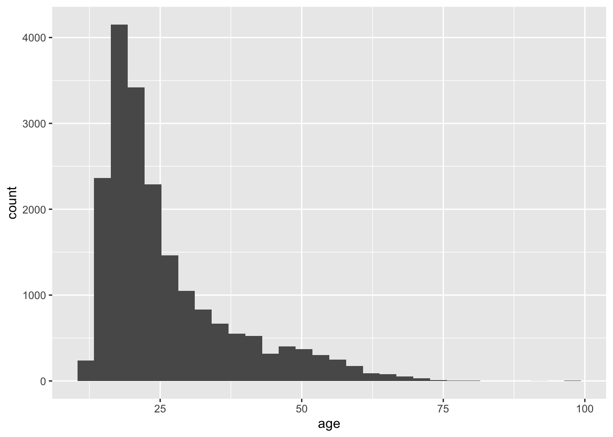

The Big Five personality traits is a theory of five broad dimensions used by some psychologists to describe the human personality and psyche: openness to experience, conscientiousness, extraversion, agreeableness, and neuroticism.1
Rows: 19719 Columns: 57
── Column specification ────────────────────────────────────────────────────────
Delimiter: "\t"
chr (1): country
dbl (56): race, age, engnat, gender, hand, source, E1, E2, E3, E4, E5, E6, E...
ℹ Use `spec()` to retrieve the full column specification for this data.
ℹ Specify the column types or set `show_col_types = FALSE` to quiet this message.
Data cleaning
A data cleanup script is in the \code folder. Let’s run that.
source("code/01-data-cleanup.R")
Joining, by = "race"
Ages
ggplot(big5, aes(x = age)) +geom_histogram()
`stat_bin()` using `bins = 30`. Pick better value with `binwidth`.

summary(big5$age)
Min. 1st Qu. Median Mean 3rd Qu. Max.
13 18 22 26 31 99
Regress extraversion vs. neuroticism and gender
Extraversion: Seeking fulfillment from sources outside the self or in community. High scorers are social, low scorers prefer to work alone. Neuroticism: Being emotional.
m_ext_age <-lm(extraversion ~ neuroticism * gender, data = big5)tidy(m_ext_age)